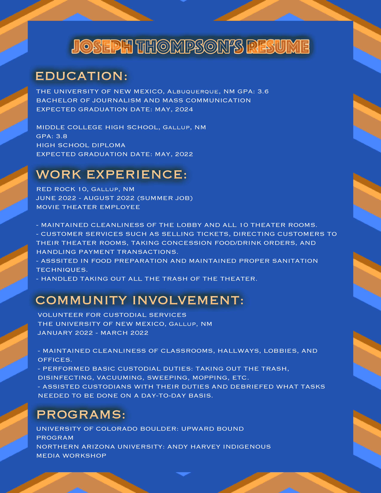

My education so far consists of obtaining a normal high school diploma from Middle College High School and two Associates degrees from UNM Gallup, those being an Associate of Applied Sciences and Associate of Arts Liberal Arts. I plan to get my Bachelors degree in Journalism from UNM Albuquerque. I would then like to get my masters at another school out of state, but I am still unsure. I do know that I will keep pursuing my education without taking a break. I want to try and get it out of the way as soon as possible.
My overall GPA from Middle College High School/UNM Branch was a 3.8. As of right now, my GPA with UNM main campus is a 3.6, which will most likely be higher. Each class that I have taken or am taking right now is all very beneficial and helpful. Especially this web design class where I am kind of becoming familiar with the different software we use.
My goal as of right now is to get my masters in journalism. The way to get to that is by finishing this upcoming school year, while applying to different master programs. Then I would be getting my bachelors by next spring, which is my expected graduation date. After all this, I would be going to school to get a master degree. Then I would try and get a good job after I’m done with school. I am unsure if I would go further beyond masters, but for now I know I’ll pursue a master's degree in Journalism.
I thought having a resume attached would be good to have, so attached below is my resume.

HOME - ABOUT - EDUCATION - PORTFOLIO - CONTACT